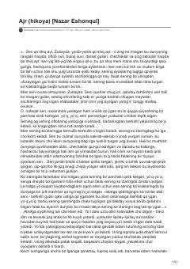

AOta va o'g'il o'rtasidagi og'ir kechinmalar va vijdon azobi haqidagi falsafiy hikoya.
Ushbu hikoyada ota va o'g'il o'rtasidagi murakkab munosabatlar, vijdon azobi va o'tmish xatolari tasvirlanadi. Asar insoniy qadriyatlar, ma'naviy tanazzul va hayotiy sinovlar haqida chuqur falsafiy mushohadalarni o'z ichiga oladi.